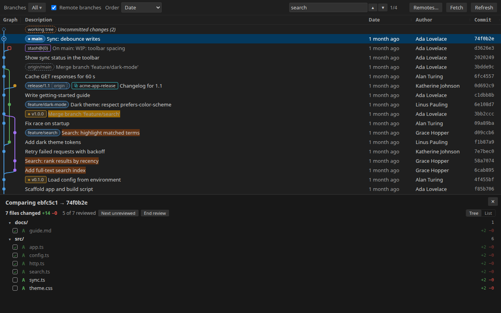

Review a commit or a branch file by file in VS Code
Not every review happens on a pull request page. You may want to read a colleague’s branch before it is pushed, check a commit that landed while you were away, or go over your own branch before merging it. Each time, you get the list of changed files and read each diff without losing your place. Here is how with plain git, with VS Code’s built-in views, and with Mergeline’s review mode, which ticks off each file you have read.
Quick answers
| I want to… | Run |
|---|---|
| See which files a commit changed, with line counts | git show --stat <sha> |
| See the whole change of one commit | git show <sha> |
See what feature changed since it left main | git diff main...feature |
| List those files with line counts | git diff --stat main...feature |
| List the commits on the branch, oldest first | git log --oneline --reverse main..feature |
| Open each changed file in VS Code’s diff editor | git difftool --tool=vscode main...feature |
| Tick off files as you review them | Mergeline’s review mode |
Review one commit
Start with the overview. git show --stat prints the commit’s author, date and message, then one line per changed file:
git show --stat 9d55050 commit 9d5505067eba2bf1390c5eeaefc00b1e532f93c1 Author: Sam <sam@example.com> Date: Fri Nov 20 15:26:44 2026 +0100 feature: change app, add test app.js | 3 ++- test.js | 1 + 2 files changed, 3 insertions(+), 1 deletion(-)
Read the message first, so you know what the change is meant to do, then start with the file the others depend on.
To see whether each file was added, modified, deleted or renamed, use --name-status instead of --stat. It prints a letter per file (A, M, D, or R with a similarity score for renames). Then read the diff one file at a time by adding a path after --:
git show --name-status 9d55050 git show 9d55050 -- app.js
git diff 9d55050^! gives the same diff without the header; ^! means “this commit against its first parent”.
Review a branch before merging
When you review a branch, you want to see what the branch did, not everything that has happened on main since it was created. That is what three dots give you:
git diff --stat main...feature git diff main...feature -- app.js
main...feature compares feature with the merge base, the last commit the two branches share. It is the same as git diff $(git merge-base main feature) feature, and it is what a pull request shows. Two dots (or a space) compare the two tips directly, so anything new on main shows up as if the branch had removed it: in our test, two dots listed a file only main had added; three dots did not. The compare branches guide explains the difference in detail.
Two more views help with a larger branch:
git log --oneline --reverse main..featurelists the branch’s own commits, oldest first. (Forgit log, two dots mean “commits infeaturethat are not inmain”.)git log -p --reverse main..featurewalks through the branch commit by commit, each with its diff. That suits small, well-described commits; for a branch of “WIP” commits, the three-dot diff is easier.
No checkout is needed: after git fetch, git diff origin/main...origin/feature reviews a remote branch. In Mergeline, remote branches show when Remote branches is ticked in the toolbar.
Open each diff in VS Code with git difftool
Reading long diffs in a terminal is tiring. git difftool takes the same arguments as git diff, but opens each changed file in a diff viewer, one after another. The git we tested (2.53) already knows VS Code as a diff tool called vscode, which runs code --wait --diff on the old and new version of each file:
git difftool --tool=vscode main...feature git difftool -y --tool=vscode 9d55050^! # -y: do not ask before each file
Close the diff tab and git opens the next file. Without -y, git asks before each one, so you can skip files. git config --global diff.tool vscode makes it the default. If your git does not list vscode in git difftool --tool-help, define it yourself with git config --global difftool.vscode.cmd 'code --wait --diff $LOCAL $REMOTE'.
git difftool -d hands the tool two folders at once, which needs a folder-comparing tool such as Meld; VS Code’s --diff compares two files. Either way difftool is a single pass: stop halfway and nothing records how far you got.
What VS Code has built in
We checked these against the git extension bundled with VS Code 1.147.
- Source Control Graph. In the Source Control view, clicking a commit in the graph opens its changes in a multi-file diff editor, with every changed file stacked in one tab. Right-clicking a commit offers Compare with Merge Base, Compare with Remote and Compare with… (pick a branch or tag). All three run a three-dot diff, which is the right view for reviewing a branch.
- Timeline. With a file open, the Timeline section at the bottom of the Explorer lists the commits that touched that file. Open Changes shows that file’s diff, and Open Commit shows the whole commit in the multi-file diff editor.
The multi-file diff editor suits a small commit read in one scroll. We found no way in these views to mark a file as reviewed, so in a 40-file change you track your place yourself. If the change is already a pull request on GitHub, the website’s Files changed tab has a Viewed checkbox per file; for local commits and branches, the options above are what you get.
Review file by file in Mergeline
Mergeline is a free, MIT-licensed git graph for VS Code. Version 0.9 adds a review mode: a check mark per changed file, a count of what is left, and a button that takes you to the next file you have not read.

- Pick what to review. Select a commit in the graph. To review the difference between two commits, Ctrl-click (Cmd-click on macOS) a second one. To review a branch the way a pull request shows it, right-click the branch and choose Changes since it split from “current”, where current is the branch you have checked out. The details pane lists the changed files.
- Start the review. Click Review in the header of the changed-files list, or right-click a commit and choose Review changes file by file. Each file gets a checkbox, and the header shows how far you are, for example 3 of 12 reviewed.
- Work through the files. Click Next unreviewed to open the next file you have not reviewed in VS Code’s diff editor. Opening a file’s diff marks it as reviewed. To change a mark, click the file’s checkbox; that toggles it, so you can untick a file you want to look at again.
- Stop and come back. Your progress is kept per commit or comparison in the workspace, so you can close VS Code and continue later where you left off.
- Finish. Click End review to clear the marks.
Review mode is not available for the uncommitted-changes row; use the Source Control view for that. The marks are Mergeline’s own record, not git data, so nothing is added to your repository.
Mergeline is not on the VS Code Marketplace yet. Download the .vsix from GitHub and run Extensions: Install from VSIX… (full steps).
Tips for a faster review
- Skip generated files. Lock files and build output make the list longer without telling you much. Exclude them with a pathspec:
git diff --stat main...feature -- . ':!package-lock.json'. - Ignore re-indentation. When a change wraps code in a new block, the diff marks every line as changed.
git diff -wignores whitespace, so only the lines that really changed remain. - Pure renames are quick. A moved file with no other change shows
0changed lines in--stat.
FAQ
Why does my branch diff include changes I did not make?
You compared with two dots or a space, so the diff includes everything main gained since your branch started, shown as if you had removed it. Use three dots: git diff main...feature.
How do I review a merge commit?
git show on a merge prints a combined diff that only shows lines where the merge differs from both parents, which is usually little or nothing. To see what the merge brought in, compare it with its first parent: git diff <merge>^1 <merge>. In Mergeline, Ctrl-click the merge and its first parent to compare the two.